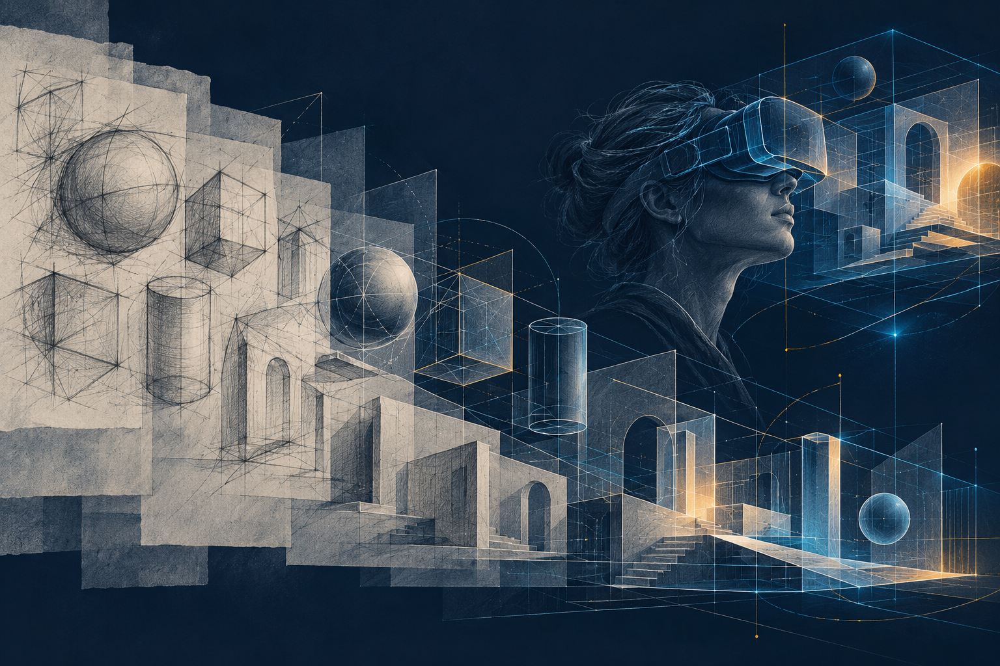

Analyze sketch systems分析计算草图系统
Critically interpret research on sketch representation, computation, and creative interaction.批判性解读草图表示、计算方法与创意交互相关研究。
Explore how computation can extend the expressive power of a sketch—from the first line on a page to editable images, modeled forms, animation, and spatial drawing.探索计算技术如何拓展草图创作的表达潜力：从纸面上的第一笔，到可编辑图像、几何造型、动画以及空间草图绘制。
A research-led journey through computer graphics and human–computer interaction.一段以研究为导向的学习历程，贯通计算机图形学与人机交互。

About the course课程简介
Fast, ambiguous, and revisable, sketching lets ideas take shape before they are fully known.草图绘制快速、含蓄且易于修订，使构想得以在尚未明晰时便初步成形。
Students connect graphics and HCI research with practical sketch-processing and interaction techniques. They analyze how algorithms express drawing intent, build and evaluate interactive sketch systems, and consider how computational tools can support creative practice while preserving the creator’s agency.学生将联系计算机图形学与人机交互领域的研究，学习草图处理与交互技术。课程引导学生分析算法如何表达绘制意图，构建并评估交互式草图系统，并探讨如何借助计算工具支持创意实践，同时维护创作者的主体性。
Learning goals学习目标
Critically interpret research on sketch representation, computation, and creative interaction.批判性解读草图表示、计算方法与创意交互相关研究。
Build interactive tools and assess their technical performance and user experience.开发交互式工具，并结合技术表现与用户体验开展评估。
Design assistance that extends creative capability while respecting the creator’s judgment and control.设计能够拓展创作能力、同时尊重创作者判断与控制权的计算辅助。
10-week lecture sequence十周专题讲授
Sketching as visual thinking: immediacy, ambiguity, communication, and iterative design. Introduction to computer graphics and computational sketching research in graphics and HCI.作为视觉思维方式的草图：即时性、模糊性、交流功能与迭代式设计。计算机图形学概论，以及图形学与人机交互领域中计算草图研究的发展脉络。
| Paper title论文标题 | Full author list作者列表 | Year年份 | Venue期刊会议 | DOI | Project page项目主页 |
|---|---|---|---|---|---|
| What Do Sketches Say About Thinking? | Barbara Tversky | 2002 | AAAI | — | Project page ↗项目主页 ↗ |
| The Necessity for Drawing | Michael Graves | 2005 | Michael Graves: Images of a Grand Tour | DOI ↗DOI ↗ | — |
| Why Do Line Drawings Work? a Realism Hypothesis | Aaron Hertzmann | 2020 | Perception | DOI ↗DOI ↗ | Project page ↗项目主页 ↗ |
| Artists’ Drawing Strategies Serve to Overcome Visual Processing Limitations | Aaron Hertzmann, Judith E. Fan | 2026 | Psychology of Aesthetics, Creativity, and the Arts | DOI ↗DOI ↗ | Project page ↗项目主页 ↗ |
Raster and vector representations; polylines and Bézier curves; tangents, curvature, junctions, and sketch beautification. Rendering, Bresenham’s line algorithm, and brush-stroke stylization.光栅与矢量表示；折线与贝塞尔曲线；切线、曲率、连接点与草图规整化。草图绘制、Bresenham 直线算法与笔刷笔画风格化。
| Paper title论文标题 | Full author list作者列表 | Year年份 | Venue期刊会议 | DOI | Project page项目主页 |
|---|---|---|---|---|---|
| Diffusion Curves: a Vector Representation for Smooth-Shaded Images | Alexandrina Orzan, Adrien Bousseau, Holger Winnemöller, Pascal Barla, Joëlle Thollot, David Salesin | 2008 | TOG | DOI ↗DOI ↗ | Project page ↗项目主页 ↗ |
| CrossShade: Shading Concept Sketches Using Cross-Section Curves | Cloud Shao, Adrien Bousseau, Alla Sheffer, Karan Singh | 2012 | TOG | DOI ↗DOI ↗ | Project page ↗项目主页 ↗ |
| HelpingHand: Example-Based Stroke Stylization | Jingwan Lu, Fisher Yu, Adam Finkelstein, Stephen DiVerdi | 2012 | TOG | DOI ↗DOI ↗ | Project page ↗项目主页 ↗ |
| Vignette: Interactive Texture Design and Manipulation with Freeform Gestures for Pen-And-Ink Illustration | Rubaiat Habib Kazi, Takeo Igarashi, Shengdong Zhao, Richard Davis | 2012 | CHI | DOI ↗DOI ↗ | Project page ↗项目主页 ↗ |
| RealBrush: Painting with Examples of Physical Media | Jingwan Lu, Connelly Barnes, Stephen DiVerdi, Adam Finkelstein | 2013 | TOG | DOI ↗DOI ↗ | Project page ↗项目主页 ↗ |
| DecoBrush: Drawing Structured Decorative Patterns by Example | Jingwan Lu, Connelly Barnes, Connie Wan, Paul Asente, Radomir Mech, Adam Finkelstein | 2014 | TOG | DOI ↗DOI ↗ | Project page ↗项目主页 ↗ |
| Differentiable Vector Graphics Rasterization for Editing and Learning | Tzu-Mao Li, Michal Lukáč, Michaël Gharbi, Jonathan Ragan-Kelley | 2020 | TOG | DOI ↗DOI ↗ | Project page ↗项目主页 ↗ |
| Sketchformer: Transformer-Based Representation for Sketched Structure | Leo Sampaio Ferraz Ribeiro, Tu Bui, John Collomosse, Moacir Ponti | 2020 | CVPR | DOI ↗DOI ↗ | Project page ↗项目主页 ↗ |
| Neural Brushstroke Engine: Learning a Latent Style Space of Interactive Drawing Tools | Maria Shugrina, Chin-Ying Li, Sanja Fidler | 2022 | TOG | DOI ↗DOI ↗ | Project page ↗项目主页 ↗ |
| StrokeStyles: Stroke-Based Segmentation and Stylization of Fonts | Daniel Berio, Frederic Fol Leymarie, Paul Asente, Jose Echevarria | 2022 | TOG | DOI ↗DOI ↗ | Project page ↗项目主页 ↗ |
| Ciallo: GPU-Accelerated Rendering of Vector Brush Strokes | Shen Ciao, Zhongyue Guan, Qianxi Liu, Li-Yi Wei, Zeyu Wang | 2024 | SIGGRAPH | DOI ↗DOI ↗ | Project page ↗项目主页 ↗ |
| SketchINR: a First Look into Sketches as Implicit Neural Representations | Hmrishav Bandyopadhyay, Ayan Kumar Bhunia, Pinaki Nath Chowdhury, Aneeshan Sain, Tao Xiang, Timothy Hospedales, Yi-Zhe Song | 2024 | CVPR | DOI ↗DOI ↗ | Project page ↗项目主页 ↗ |
Perception, recognition, segmentation, and abstraction; stroke intent and distortion.感知、识别、分割与抽象；笔画意图与形变。
| Paper title论文标题 | Full author list作者列表 | Year年份 | Venue期刊会议 | DOI | Project page项目主页 |
|---|---|---|---|---|---|
| Where Do People Draw Lines? | Forrester Cole, Aleksey Golovinskiy, Alex Limpaecher, Heather Stoddart Barros, Adam Finkelstein, Thomas Funkhouser, Szymon Rusinkiewicz | 2008 | TOG | DOI ↗DOI ↗ | Project page ↗项目主页 ↗ |
| Style and Abstraction in Portrait Sketching | Itamar Berger, Ariel Shamir, Moshe Mahler, Elizabeth Carter, Jessica Hodgins | 2013 | TOG | DOI ↗DOI ↗ | Project page ↗项目主页 ↗ |
| Sketch-a-Net: a Deep Neural Network That Beats Humans | Qian Yu, Yongxin Yang, Feng Liu, Yi-Zhe Song, Tao Xiang, Timothy M. Hospedales | 2016 | IJCV | DOI ↗DOI ↗ | — |
| Learning Deep Sketch Abstraction | Umar Riaz Muhammad, Yongxin Yang, Yi-Zhe Song, Tao Xiang, Timothy M. Hospedales | 2018 | CVPR | DOI ↗DOI ↗ | Project page ↗项目主页 ↗ |
| OpenSketch: a Richly-Annotated Dataset of Product Design Sketches | Yulia Gryaditskaya, Mark Sypesteyn, Jan Willem Hoftijzer, Sylvia Pont, Frédo Durand, Adrien Bousseau | 2019 | TOG | DOI ↗DOI ↗ | Project page ↗项目主页 ↗ |
| SketchAA: Abstract Representation for Abstract Sketches | Lan Yang, Kaiyue Pang, Honggang Zhang, Yi-Zhe Song | 2021 | ICCV | DOI ↗DOI ↗ | Project page ↗项目主页 ↗ |
| SketchGNN: Semantic Sketch Segmentation with Graph Neural Networks | Lumin Yang, Jiajie Zhuang, Hongbo Fu, Xiangzhi Wei, Kun Zhou, Youyi Zheng | 2021 | TOG | DOI ↗DOI ↗ | Project page ↗项目主页 ↗ |
| Tracing Versus Freehand for Evaluating Computer-Generated Drawings | Zeyu Wang, Sherry Qiu, Nicole Feng, Holly Rushmeier, Leonard McMillan, Julie Dorsey | 2021 | TOG | DOI ↗DOI ↗ | Project page ↗项目主页 ↗ |
| DifferSketching: How Differently Do People Sketch 3D Objects? | Chufeng Xiao, Wanchao Su, Jing Liao, Zhouhui Lian, Yi-Zhe Song, Hongbo Fu | 2022 | TOG | DOI ↗DOI ↗ | Project page ↗项目主页 ↗ |
| ContextSeg: Sketch Semantic Segmentation by Querying the Context with Attention | Jiawei Wang, Changjian Li | 2024 | CVPR | DOI ↗DOI ↗ | Project page ↗项目主页 ↗ |
| Open Vocabulary Semantic Scene Sketch Understanding | Ahmed Bourouis, Judith E. Fan, Yulia Gryaditskaya | 2024 | CVPR | DOI ↗DOI ↗ | Project page ↗项目主页 ↗ |
| Capturing Non-Linear Human Perspective in Line Drawings | Jinfan Yang, Leo Foord-Kelcey, Suzuran Takikawa, Nicholas Vining, Niloy Mitra, Alla Sheffer | 2025 | SIGGRAPH Asia | DOI ↗DOI ↗ | Project page ↗项目主页 ↗ |
Sketch-guided image generation and editing: GANs, diffusion models, and colorization. Sketch-based image retrieval: cross-modal matching and collage construction.草图引导的图像生成与编辑：生成对抗网络、扩散模型与图像着色。基于草图的图像检索：跨模态匹配与拼贴构建。
| Paper title论文标题 | Full author list作者列表 | Year年份 | Venue期刊会议 | DOI | Project page项目主页 |
|---|---|---|---|---|---|
| Sketch2Photo: Internet Image Montage | Tao Chen, Ming-Ming Cheng, Ping Tan, Ariel Shamir, Shi-Min Hu | 2009 | TOG | DOI ↗DOI ↗ | Project page ↗项目主页 ↗ |
| The Sketchy Database: Learning to Retrieve Badly Drawn Bunnies | Patsorn Sangkloy, Nathan Burnell, Cusuh Ham, James Hays | 2016 | TOG | DOI ↗DOI ↗ | Project page ↗项目主页 ↗ |
| Image-to-Image Translation with Conditional Adversarial Networks | Phillip Isola, Jun-Yan Zhu, Tinghui Zhou, Alexei A. Efros | 2017 | CVPR | DOI ↗DOI ↗ | Project page ↗项目主页 ↗ |
| SketchyGAN: Towards Diverse and Realistic Sketch to Image Synthesis | Wengling Chen, James Hays | 2018 | CVPR | DOI ↗DOI ↗ | Project page ↗项目主页 ↗ |
| Semantic Image Synthesis with Spatially-Adaptive Normalization | Taesung Park, Ming-Yu Liu, Ting-Chun Wang, Jun-Yan Zhu | 2019 | CVPR | DOI ↗DOI ↗ | Project page ↗项目主页 ↗ |
| DeepFaceDrawing: Deep Generation of Face Images from Sketches | Shu-Yu Chen, Wanchao Su, Lin Gao, Shihong Xia, Hongbo Fu | 2020 | TOG | DOI ↗DOI ↗ | Project page ↗项目主页 ↗ |
| Deep Plastic Surgery: Robust and Controllable Image Editing with Human-Drawn Sketches | Shuai Yang, Zhangyang Wang, Jiaying Liu, Zongming Guo | 2020 | ECCV | DOI ↗DOI ↗ | Project page ↗项目主页 ↗ |
| Sketch Less for More: On-the-Fly Fine-Grained Sketch-Based Image Retrieval | Ayan Kumar Bhunia, Yongxin Yang, Timothy M. Hospedales, Tao Xiang, Yi-Zhe Song | 2020 | CVPR | DOI ↗DOI ↗ | Project page ↗项目主页 ↗ |
| Adding Conditional Control to Text-to-Image Diffusion Models | Lvmin Zhang, Anyi Rao, Maneesh Agrawala | 2023 | ICCV | DOI ↗DOI ↗ | Project page ↗项目主页 ↗ |
| Sketch-Guided Text-to-Image Diffusion Models | Andrey Voynov, Kfir Aberman, Daniel Cohen-Or | 2023 | SIGGRAPH | DOI ↗DOI ↗ | Project page ↗项目主页 ↗ |
| Block and Detail: Scaffolding Sketch-to-Image Generation | Vishnu Sarukkai, Lu Yuan, Mia Tang, Maneesh Agrawala, Kayvon Fatahalian | 2024 | UIST | DOI ↗DOI ↗ | Project page ↗项目主页 ↗ |
| It's All About Your Sketch: Democratising Sketch Control in Diffusion Models | Subhadeep Koley, Ayan Kumar Bhunia, Deeptanshu Sekhri, Aneeshan Sain, Pinaki Nath Chowdhury, Tao Xiang, Yi-Zhe Song | 2024 | CVPR | DOI ↗DOI ↗ | Project page ↗项目主页 ↗ |
| Learning Inclusion Matching for Animation Paint Bucket Colorization | Yuekun Dai, Shangchen Zhou, Qinyue Li, Chongyi Li, Chen Change Loy | 2024 | CVPR | DOI ↗DOI ↗ | Project page ↗项目主页 ↗ |
| MagicColor: Multi-Instance Sketch Colorization | Yinhan Zhang, Yue Ma, Bingyuan Wang, Qifeng Chen, Zeyu Wang | 2025 | ICCV | DOI ↗DOI ↗ | Project page ↗项目主页 ↗ |
| DoodleAssist: Progressive Interactive Line Art Generation with Latent Distribution Alignment | Haoran Mo, Yulin Shen, Edgar Simo-Serra, Zeyu Wang | 2026 | TVCG | DOI ↗DOI ↗ | Project page ↗项目主页 ↗ |
Spatial drawing: 3D curves, scaffolds, constraints, surfaces, and immersive interaction. Lifting 2D sketches into 3D: depth estimation, projection, geometric regularity, correspondence, and user control.空间绘制：三维曲线、辅助结构、约束、曲面与沉浸式交互。二维草图向三维空间的提升：深度估计、投影、几何规律、对应关系与用户控制。
| Paper title论文标题 | Full author list作者列表 | Year年份 | Venue期刊会议 | DOI | Project page项目主页 |
|---|---|---|---|---|---|
| The ModelCraft Framework: Capturing Freehand Annotations and Edits to Facilitate the 3D Model Design Process Using a Digital Pen | Hyunyoung Song, François Guimbretière, Hod Lipson | 2009 | TOCHI | DOI ↗DOI ↗ | Project page ↗项目主页 ↗ |
| Skippy: Single View 3D Curve Interactive Modeling | Vojtěch Krs, Ersin Yumer, Nathan Carr, Bedrich Benes, Radomír Měch | 2017 | TOG | DOI ↗DOI ↗ | Project page ↗项目主页 ↗ |
| Agile 3D Sketching with Air Scaffolding | Yongkwan Kim, Sang-Gyun An, Joon Hyub Lee, Seok-Hyung Bae | 2018 | CHI | DOI ↗DOI ↗ | Project page ↗项目主页 ↗ |
| SymbiosisSketch: Combining 2D \& 3D Sketching for Designing Detailed 3D Objects in Situ | Rahul Arora, Rubaiat Habib Kazi, Tovi Grossman, George Fitzmaurice, Karan Singh | 2018 | CHI | DOI ↗DOI ↗ | Project page ↗项目主页 ↗ |
| Model-Guided 3D Sketching | Pengfei Xu, Hongbo Fu, Youyi Zheng, Karan Singh, Hui Huang, Chiew-Lan Tai | 2019 | TVCG | DOI ↗DOI ↗ | Project page ↗项目主页 ↗ |
| SurfaceBrush: from Virtual Reality Drawings to Manifold Surfaces | Enrique Rosales, Jafet Rodriguez, Alla Sheffer | 2019 | TOG | DOI ↗DOI ↗ | Project page ↗项目主页 ↗ |
| Lifting Freehand Concept Sketches into 3D | Yulia Gryaditskaya, Felix Hähnlein, Chenxi Liu, Alla Sheffer, Adrien Bousseau | 2020 | TOG | DOI ↗DOI ↗ | Project page ↗项目主页 ↗ |
| RealitySketch: Embedding Responsive Graphics and Visualizations in AR Through Dynamic Sketching | Ryo Suzuki, Rubaiat Habib Kazi, Li-yi Wei, Stephen DiVerdi, Wilmot Li, Daniel Leithinger | 2020 | UIST | DOI ↗DOI ↗ | Project page ↗项目主页 ↗ |
| GestureSurface: VR Sketching Through Assembling Scaffold Surface with Non-Dominant Hand | Xinchi Xu, Yang Zhou, Bingchan Shao, Guihuan Feng, Chun Yu | 2023 | TVCG | DOI ↗DOI ↗ | Project page ↗项目主页 ↗ |
| 3D-Layers: Bringing Layer-Based Color Editing to VR Painting | Emilie Yu, Fanny Chevalier, Karan Singh, Adrien Bousseau | 2024 | TOG | DOI ↗DOI ↗ | Project page ↗项目主页 ↗ |
| Neural Canvas: Supporting Scenic Design Prototyping by Integrating 3D Sketching and Generative AI | Yulin Shen, Yifei Shen, Jiawen Cheng, Chutian Jiang, Mingming Fan, Zeyu Wang | 2024 | CHI | DOI ↗DOI ↗ | Project page ↗项目主页 ↗ |
Use geometric and data-driven methods to construct and edit shapes. Sketch-based shape retrieval: similarity representations and query interpretation.通过几何方法与数据驱动方法，利用草图构建和编辑形状。基于草图的形状检索：相似性表示与查询意图解析。
| Paper title论文标题 | Full author list作者列表 | Year年份 | Venue期刊会议 | DOI | Project page项目主页 |
|---|---|---|---|---|---|
| Teddy: a Sketching Interface for 3D Freeform Design | Takeo Igarashi, Satoshi Matsuoka, Hidehiko Tanaka | 1999 | SIGGRAPH | DOI ↗DOI ↗ | Project page ↗项目主页 ↗ |
| ILoveSketch: as-Natural-As-Possible Sketching System for Creating 3d Curve Models | Seok-Hyung Bae, Ravin Balakrishnan, Karan Singh | 2008 | UIST | DOI ↗DOI ↗ | Project page ↗项目主页 ↗ |
| True2Form: 3D Curve Networks from 2D Sketches via Selective Regularization | Baoxuan Xu, William Chang, Alla Sheffer, Adrien Bousseau, James McCrae, Karan Singh | 2014 | TOG | DOI ↗DOI ↗ | Project page ↗项目主页 ↗ |
| BendFields: Regularized Curvature Fields from Rough Concept Sketches | Emmanuel Iarussi, David Bommes, Adrien Bousseau | 2015 | TOG | DOI ↗DOI ↗ | Project page ↗项目主页 ↗ |
| SecondSkin: Sketch-Based Construction of Layered 3D Models | Chris De Paoli, Karan Singh | 2015 | TOG | DOI ↗DOI ↗ | Project page ↗项目主页 ↗ |
| Sketching Folds: Developable Surfaces from Non-Planar Silhouettes | Amaury Jung, Stefanie Hahmann, Damien Rohmer, Antoine Begault, Laurence Boissieux, Marie-Paule Cani | 2015 | TOG | DOI ↗DOI ↗ | Project page ↗项目主页 ↗ |
| 3D Shape Reconstruction from Sketches via Multi-View Convolutional Networks | Zhaoliang Lun, Matheus Gadelha, Evangelos Kalogerakis, Subhransu Maji, Rui Wang | 2017 | 3DV | DOI ↗DOI ↗ | Project page ↗项目主页 ↗ |
| BendSketch: Modeling Freeform Surfaces Through 2D Sketching | Changjian Li, Hao Pan, Yang Liu, Xin Tong, Alla Sheffer, Wenping Wang | 2017 | TOG | DOI ↗DOI ↗ | Project page ↗项目主页 ↗ |
| DeepSketch2Face: A Deep Learning Based Sketching System for 3D Face and Caricature Modeling | Xiaoguang Han, Chang Gao, Yizhou Yu | 2017 | TOG | DOI ↗DOI ↗ | Project page ↗项目主页 ↗ |
| Robust Flow-Guided Neural Prediction for Sketch-Based Freeform Surface Modeling | Changjian Li, Hao Pan, Yang Liu, Xin Tong, Alla Sheffer, Wenping Wang | 2018 | TOG | DOI ↗DOI ↗ | Project page ↗项目主页 ↗ |
| Monster Mash: a Single-View Approach to Casual 3D Modeling and Animation | Marek Dvorožňák, Daniel Sýkora, Cassidy Curtis, Brian Curless, Olga Sorkine-Hornung, David Salesin | 2020 | TOG | DOI ↗DOI ↗ | Project page ↗项目主页 ↗ |
| Free2CAD: parsing freehand drawings into CAD commands | Changjian Li, Hao Pan, Adrien Bousseau, Niloy J. Mitra | 2022 | TOG | DOI ↗DOI ↗ | Project page ↗项目主页 ↗ |
| Democratising 2D Sketch to 3D Shape Retrieval Through Pivoting | Pinaki Nath Chowdhury, Ayan Kumar Bhunia, Aneeshan Sain, Subhadeep Koley, Tao Xiang, Yi-Zhe Song | 2023 | ICCV | DOI ↗DOI ↗ | Project page ↗项目主页 ↗ |
| SketchDream: Sketch-Based Text-To-3D Generation and Editing | Feng-Lin Liu, Hongbo Fu, Yu-Kun Lai, Lin Gao | 2024 | TOG | DOI ↗DOI ↗ | Project page ↗项目主页 ↗ |
| NeuralSketch2Surf: Fast Neural Surfacing of Unoriented 3D Sketches | Hongsheng Ye, Anandhu Sureshkumar, Zhonghan Wang, Stefanie Hahmann, Marie-Paule Cani, Georges-Pierre Bonneau, Amal Dev Parakkat | 2026 | SIGGRAPH | DOI ↗DOI ↗ | Project page ↗项目主页 ↗ |
| Sketch2Arti: Sketch-Based Articulation Modeling of CAD Objects | Yi Yang, Hao Pan, Yijing Cui, Alla Sheffer, Changjian Li | 2026 | TOG | DOI ↗DOI ↗ | Project page ↗项目主页 ↗ |
Cleanup: denoising, resampling, simplification, gap handling, and stroke grouping. Vectorization: stroke-centerline extraction, curve fitting, and editable output.清理：去噪、重采样、简化、间隙处理与笔画分组。矢量化：笔画中心线提取、曲线拟合与可编辑输出。
| Paper title论文标题 | Full author list作者列表 | Year年份 | Venue期刊会议 | DOI | Project page项目主页 |
|---|---|---|---|---|---|
| Fidelity Vs. Simplicity: a Global Approach to Line Drawing Vectorization | Jean-Dominique Favreau, Florent Lafarge, Adrien Bousseau | 2016 | TOG | DOI ↗DOI ↗ | Project page ↗项目主页 ↗ |
| Learning to Simplify: Fully Convolutional Networks for Rough Sketch Cleanup | Edgar Simo-Serra, Satoshi Iizuka, Kazuma Sasaki, Hiroshi Ishikawa | 2016 | TOG | DOI ↗DOI ↗ | Project page ↗项目主页 ↗ |
| Mastering Sketching: Adversarial Augmentation for Structured Prediction | Edgar Simo-Serra, Satoshi Iizuka, Hiroshi Ishikawa | 2018 | TOG | DOI ↗DOI ↗ | Project page ↗项目主页 ↗ |
| StrokeAggregator: Consolidating Raw Sketches into Artist-Intended Curve Drawings | Chenxi Liu, Enrique Rosales, Alla Sheffer | 2018 | TOG | DOI ↗DOI ↗ | Project page ↗项目主页 ↗ |
| Vectorization of Line Drawings via Polyvector Fields | Mikhail Bessmeltsev, Justin Solomon | 2019 | TOG | DOI ↗DOI ↗ | Project page ↗项目主页 ↗ |
| A Benchmark for Rough Sketch Cleanup | Chuan Yan, David Vanderhaeghe, Yotam Gingold | 2020 | TOG | DOI ↗DOI ↗ | Project page ↗项目主页 ↗ |
| General Virtual Sketching Framework for Vector Line Art | Haoran Mo, Edgar Simo-Serra, Chengying Gao, Changqing Zou, Ruomei Wang | 2021 | TOG | DOI ↗DOI ↗ | Project page ↗项目主页 ↗ |
| Detecting Viewer-Perceived Intended Vector Sketch Connectivity | Jerry Yin, Chenxi Liu, Rebecca Lin, Nicholas Vining, Helge Rhodin, Alla Sheffer | 2022 | TOG | DOI ↗DOI ↗ | Project page ↗项目主页 ↗ |
| Deep Sketch Vectorization via Implicit Surface Extraction | Chuan Yan, Yong Li, Deepali Aneja, Matthew Fisher, Edgar Simo-Serra, Yotam Gingold | 2024 | TOG | DOI ↗DOI ↗ | Project page ↗项目主页 ↗ |
| 2D Gaussian Splatting for Bézier Spline Line Art Vectorization | Tianhao Chen, Clara Fernandez, Marteinn Oskarsson, Chuck Tappan, Olga Sorkine-Hornung, Markus Gross, Christopher Schroers, Abdelaziz Djelouah | 2026 | SIGGRAPH | DOI ↗DOI ↗ | Project page ↗项目主页 ↗ |
Drawing processes: stroke ordering, timing, and animated sketch construction. Sketch inbetweening: occlusions, stroke correspondences, and video-based models.绘制过程：笔画次序、时间信息与动画草图构建。草图中间帧生成：遮挡、笔画对应关系与基于视频的模型。
| Paper title论文标题 | Full author list作者列表 | Year年份 | Venue期刊会议 | DOI | Project page项目主页 |
|---|---|---|---|---|---|
| As-Rigid-As-Possible Shape Manipulation | Takeo Igarashi, Tomer Moscovich, John F. Hughes | 2005 | TOG | DOI ↗DOI ↗ | Project page ↗项目主页 ↗ |
| Animated Construction of Line Drawings | Hongbo Fu, Shizhe Zhou, Ligang Liu, Niloy J. Mitra | 2011 | SIGGRAPH Asia | DOI ↗DOI ↗ | Project page ↗项目主页 ↗ |
| Context-Aware Computer Aided Inbetweening | Wenwu Yang | 2018 | TVCG | DOI ↗DOI ↗ | — |
| Toonsynth: Example-Based Synthesis of Hand-Colored Cartoon Animations | Marek Dvorožnák, Wilmot Li, Vladimir G. Kim, Daniel Sýkora | 2018 | TOG | DOI ↗DOI ↗ | Project page ↗项目主页 ↗ |
| A Method for Animating Children’s Drawings of the Human Figure | Harrison Jesse Smith, Qingyuan Zheng, Yifei Li, Somya Jain, Jessica K. Hodgins | 2023 | TOG | DOI ↗DOI ↗ | Project page ↗项目主页 ↗ |
| Deep Geometrized Cartoon Line Inbetweening | Li Siyao, Tianpei Gu, Weiye Xiao, Henghui Ding, Ziwei Liu, Chen Change Loy | 2023 | ICCV | DOI ↗DOI ↗ | Project page ↗项目主页 ↗ |
| Breathing Life into Sketches Using Text-to-Video Priors | Rinon Gal, Yael Vinker, Yuval Alaluf, Amit Bermano, Daniel Cohen-Or, Ariel Shamir, Gal Chechik | 2024 | CVPR | DOI ↗DOI ↗ | Project page ↗项目主页 ↗ |
| Joint Stroke Tracing and Correspondence for 2D Animation | Haoran Mo, Chengying Gao, Ruomei Wang | 2024 | TOG | DOI ↗DOI ↗ | Project page ↗项目主页 ↗ |
| ToonCrafter: Generative Cartoon Interpolation | Jinbo Xing, Hanyuan Liu, Menghan Xia, Yong Zhang, Xintao Wang, Ying Shan, Tien-Tsin Wong | 2024 | TOG | DOI ↗DOI ↗ | Project page ↗项目主页 ↗ |
| Dynamic Typography: Bringing Text to Life via Video Diffusion Prior | Zichen Liu, Yihao Meng, Hao Ouyang, Yue Yu, Bolin Zhao, Daniel Cohen-Or, Huamin Qu | 2025 | ICCV | DOI ↗DOI ↗ | Project page ↗项目主页 ↗ |
| LayerAnimate: Layer-Level Control for Animation | Yuxue Yang, Lue Fan, Zuzeng Lin, Feng Wang, Zhaoxiang Zhang | 2025 | ICCV | DOI ↗DOI ↗ | Project page ↗项目主页 ↗ |
| LayerInbetween: Occlusion-Aware Stroke Correspondence and Inbetweening with Automatic Layering | Haoran Mo, Zhongyue Guan, Yixin Hu, Zeyu Wang | 2026 | TOG | DOI ↗DOI ↗ | Project page ↗项目主页 ↗ |
Raster sketch extraction from images: Canny and holistically nested edge detection. Vector sketch generation and learned drawing models: Sketch-RNN and CLIPasso.从图像中提取光栅草图：Canny 边缘检测与整体嵌套边缘检测。矢量草图生成与学习式绘图模型：Sketch-RNN 与 CLIPasso。
| Paper title论文标题 | Full author list作者列表 | Year年份 | Venue期刊会议 | DOI | Project page项目主页 |
|---|---|---|---|---|---|
| Holistically-Nested Edge Detection | Saining Xie, Zhuowen Tu | 2015 | ICCV | DOI ↗DOI ↗ | Project page ↗项目主页 ↗ |
| Deep Extraction of Manga Structural Lines | Chengze Li, Xueting Liu, Tien-Tsin Wong | 2017 | TOG | DOI ↗DOI ↗ | Project page ↗项目主页 ↗ |
| A Neural Representation of Sketch Drawings | David Ha, Douglas Eck | 2018 | ICLR | DOI ↗DOI ↗ | Project page ↗项目主页 ↗ |
| Photo-Sketching: Inferring Contour Drawings from Images | Mengtian Li, Zhe Lin, Radomir Mech, Ersin Yumer, Deva Ramanan | 2019 | WACV | DOI ↗DOI ↗ | Project page ↗项目主页 ↗ |
| CLIPasso: Semantically-Aware Object Sketching | Yael Vinker, Ehsan Pajouheshgar, Jessica Y. Bo, Roman Christian Bachmann, Amit Haim Bermano, Daniel Cohen-Or, Amir Zamir, Ariel Shamir | 2022 | TOG | DOI ↗DOI ↗ | Project page ↗项目主页 ↗ |
| Learning to Generate Line Drawings That Convey Geometry and Semantics | Caroline Chan, Fredo Durand, Phillip Isola | 2022 | CVPR | DOI ↗DOI ↗ | Project page ↗项目主页 ↗ |
| Clipascene: Scene Sketching with Different Types and Levels of Abstraction | Yael Vinker, Yuval Alaluf, Daniel Cohen-Or, Ariel Shamir | 2023 | ICCV | DOI ↗DOI ↗ | Project page ↗项目主页 ↗ |
| DiffSketcher: Text Guided Vector Sketch Synthesis Through Latent Diffusion Models | Ximing Xing, Chuang Wang, Haitao Zhou, Jing Zhang, Qian Yu, Dong Xu | 2023 | NeurIPS | DOI ↗DOI ↗ | Project page ↗项目主页 ↗ |
| Semi-Supervised Reference-Based Sketch Extraction Using a Contrastive Learning Framework | Chang Wook Seo, Amirsaman Ashtari, Junyong Noh | 2023 | TOG | DOI ↗DOI ↗ | Project page ↗项目主页 ↗ |
| AutoSketch: VLM-assisted Style-Aware Vector Sketch Completion | Hsiao-Yuan Chin, I-Chao Shen, Yi-Ting Chiu, Ariel Shamir, Bing-Yu Chen | 2025 | SIGGRAPH Asia | DOI ↗DOI ↗ | Project page ↗项目主页 ↗ |
| SVGDreamer++: Advancing Editability and Diversity in Text-Guided SVG Generation | Ximing Xing, Qian Yu, Chuang Wang, Haitao Zhou, Jing Zhang, Dong Xu | 2025 | TPAMI | DOI ↗DOI ↗ | Project page ↗项目主页 ↗ |
| SwiftSketch: a Diffusion Model for Image-to-Vector Sketch Generation | Ellie Arar, Yarden Frenkel, Daniel Cohen-Or, Ariel Shamir, Yael Vinker | 2025 | SIGGRAPH | DOI ↗DOI ↗ | Project page ↗项目主页 ↗ |
Line drawing, abstraction, and stylized rendering of images from 3D assets. Surface curvature, suggestive contours, ridges, valleys, and apparent ridges.基于三维资产的线条绘制、抽象化与风格化图像生成。曲面曲率、暗示性轮廓、脊线、谷线与视在脊线。
| Paper title论文标题 | Full author list作者列表 | Year年份 | Venue期刊会议 | DOI | Project page项目主页 |
|---|---|---|---|---|---|
| Illustrating Smooth Surfaces | Aaron Hertzmann, Denis Zorin | 2000 | SIGGRAPH | DOI ↗DOI ↗ | Project page ↗项目主页 ↗ |
| Suggestive Contours for Conveying Shape | Doug DeCarlo, Adam Finkelstein, Szymon Rusinkiewicz, Anthony Santella | 2003 | TOG | DOI ↗DOI ↗ | Project page ↗项目主页 ↗ |
| Ridge-Valley Lines on Meshes via Implicit Surface Fitting | Yutaka Ohtake, Alexander Belyaev, Hans-Peter Seidel | 2004 | TOG | DOI ↗DOI ↗ | Project page ↗项目主页 ↗ |
| Apparent Ridges for Line Drawing | Tilke Judd, Frédo Durand, Edward Adelson | 2007 | TOG | DOI ↗DOI ↗ | Project page ↗项目主页 ↗ |
| How Well Do Line Drawings Depict Shape? | Forrester Cole, Kevin Sanik, Doug DeCarlo, Adam Finkelstein, Thomas Funkhouser, Szymon Rusinkiewicz, Manish Singh | 2009 | TOG | DOI ↗DOI ↗ | Project page ↗项目主页 ↗ |
| Learning Hatching for Pen-and-Ink Illustration of Surfaces | Evangelos Kalogerakis, Derek Nowrouzezahrai, Simon Breslav, Aaron Hertzmann | 2012 | TOG | DOI ↗DOI ↗ | Project page ↗项目主页 ↗ |
| Neural Contours: Learning to Draw Lines from 3D Shapes | Difan Liu, Mohamed Nabail, Aaron Hertzmann, Evangelos Kalogerakis | 2020 | CVPR | DOI ↗DOI ↗ | Project page ↗项目主页 ↗ |
| Neural Strokes: Stylized Line Drawing of 3D Shapes | Difan Liu, Matthew Fisher, Aaron Hertzmann, Evangelos Kalogerakis | 2021 | ICCV | DOI ↗DOI ↗ | Project page ↗项目主页 ↗ |
| CAD2Sketch: Generating Concept Sketches from CAD Sequences | Felix Hähnlein, Changjian Li, Niloy J. Mitra, Adrien Bousseau | 2022 | TOG | DOI ↗DOI ↗ | Project page ↗项目主页 ↗ |